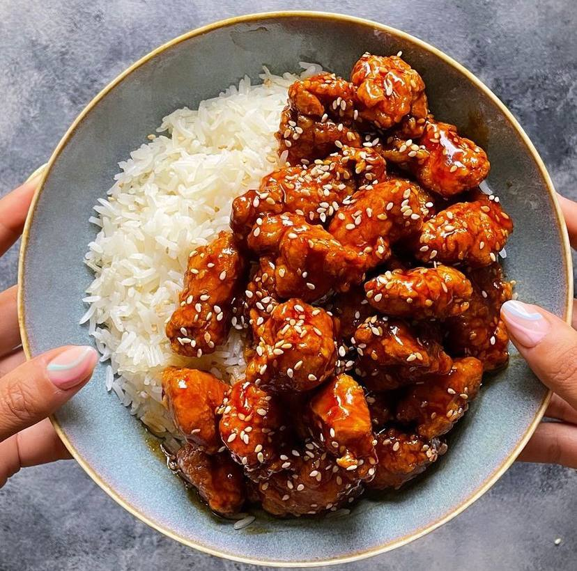
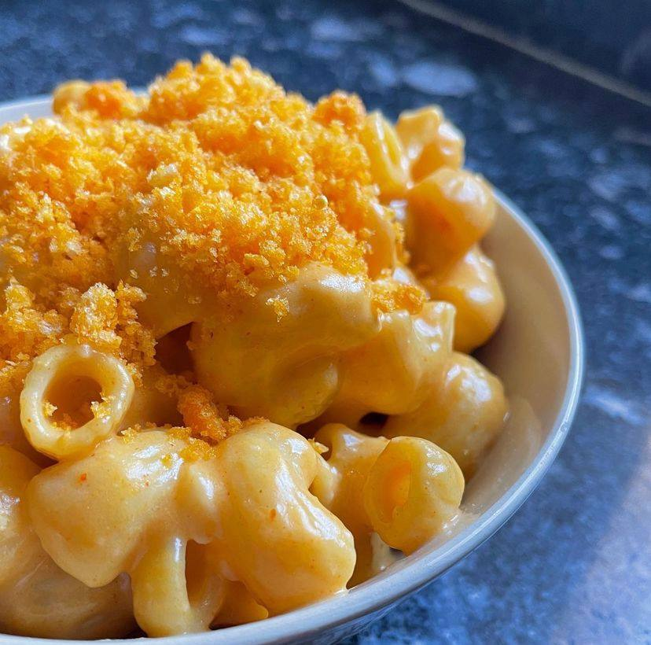
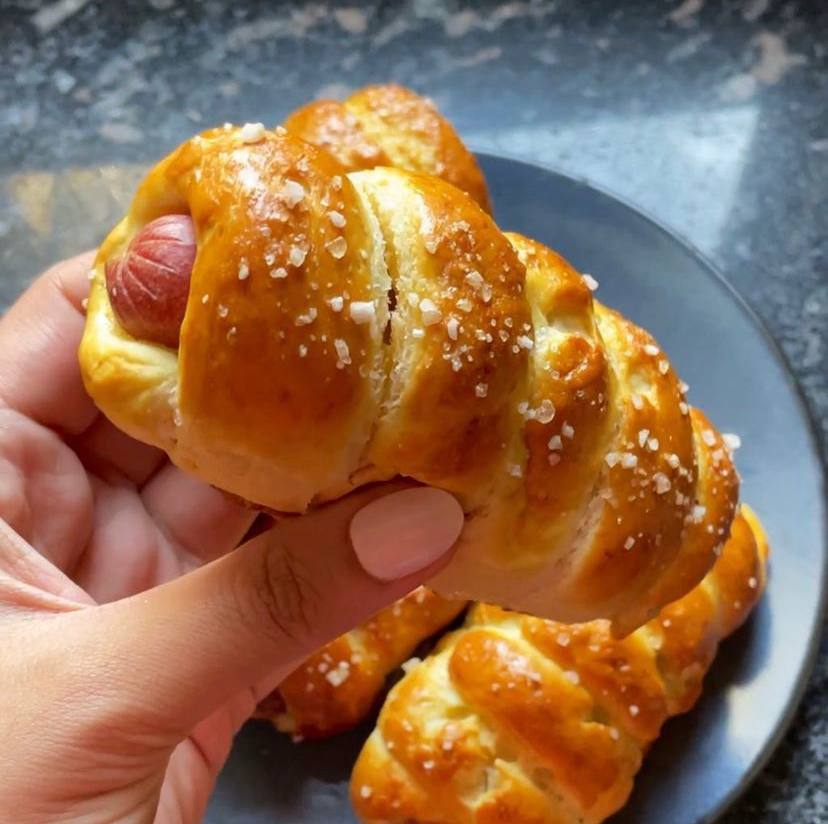
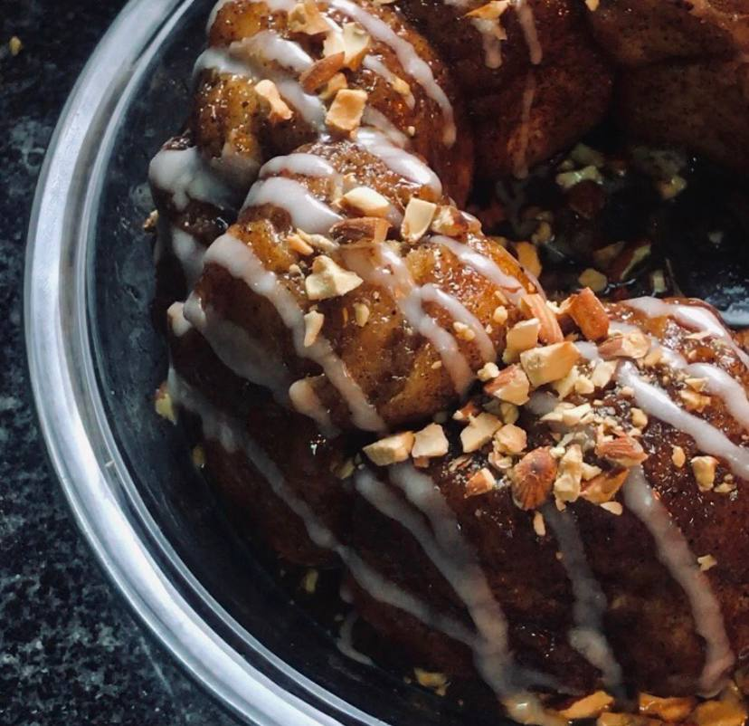

Recipes is all about to provide you with different food recipes that are easy to make. You can make any of these recipes easily even if you are not a professional cooker.
Feel free to share these recipes with your friends and family. Thank you!

Get the chicken breasts and put them into a bowl. Then put on top of it the Eggs, Soy Sauce, Pepper. Mix everything together and let it aside.
Then get another bowl and put in it the Flour, Cornstarch, Then put the chicken breasts in it so that the chicken is all covered.
Get a pan and pour oil in it, then put your chicken in the oil until they're golden color.
As for the sauce you will need to put: Soy Sauce, Ketchup, Brown Sugar, Honey, Vinger and Water. Mix everything together and put it in a pan that is hot, and pour 1 tbs of cornstarch along with 1 tbs of water. Mix everything in the pan until it gets thick.
Put the the chicken in the mixture that we just created. Mix everything together so that the chicken are covered in the sauce
You can serve it along with rice or pasta. Enjoy!

Get a pan, put the milk, chedder, corn starch, mozzarella, paprika, salt, garlic powder, hot sauce, mustard
Once you get everything in the pan, start to mix everything until fully combined
Then put the butter on the mixture, then mix everything until it is creamy
Then put the pasta on the sauce, then mix everything
Serve the pasta on a plate. Put the crushed cheetos on it and Enjoy!

In a big bowl put: water, sugar, instant yeast. Mix it will and let it rest aside for 5 minutes
Put the flour, salt, butter. Mix it will and form it up with your hands until it forms a paste
Get the paste in the bowl one more time and put oil on it, then it let it rest for 1 hour
Once the paste had rested, roll it up with your hands and cut it into 10 equal pieces
Get every piece and roll it onto a hotdog
In a different bowl, pour hot water and baking soda. Mix it will and put every piece in it for 5 seconds
Remove every piece from the water and baking soda. Put it on a baking sheet and put eggs on it and salt
Put the Pretzels in the oven, medium heat for 10 minutes. Enjoy!

In a bowl put: milk, butter, yeast. Mix it will and let it aside for 5 minutes
After that put: egg, sugar, salt, flour. Mix it will and then make a dough out of it with your hands
place the dough in the bowl one more time and put oil on it, and let it rest aside for 1 hour
In a bowl put: butter, heavy cream, brown sugar, salt. Put it in the microwave for 1 minute until melted
After the dough had rested for one hour, cut it into small pieces
put every piece in the water, then in the cinnamon sugar so that it will stick to it.
In a tray put 3 spoons of caramel sauce, put the dough pieces. And repeat until you are done with the dough pieces
Let it rest one more time for 30 minutes
Put the tray in the oven for 10-13 minutes at 180 heat
After it is done serve in a bowl. Enjoy!
| Name | How many people will it serve | How much time would it take to make it |
|---|---|---|
| Sesame Chicken | 2 adults | 30 minutes |
| Mac&Cheese | 1 adult | 20 minutes |
| Pretzel Dogs | 6 adults | 1 hour |
| Monkey Bread | 4 adults | 1 hour |